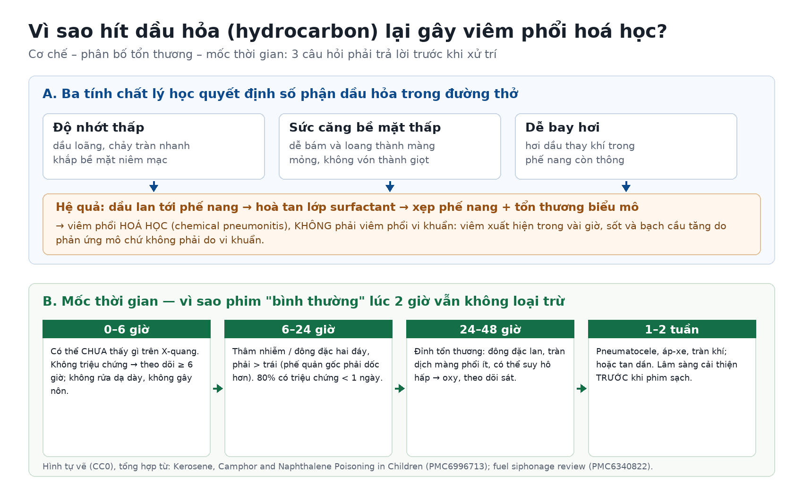
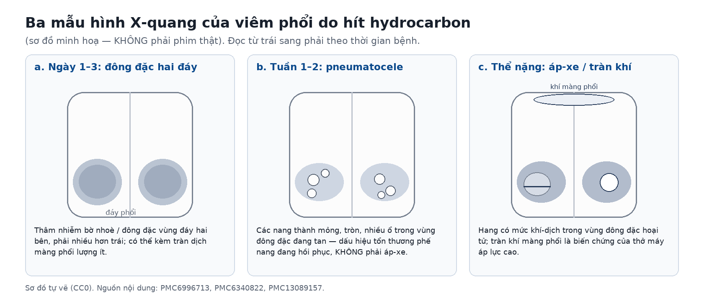

087 — Viêm phổi do hít dầu hỏa / hydrocarbon ở trẻ: cơ chế hoá học, mốc thời gian trên phim & ba việc KHÔNG được làm / Hydrocarbon pneumonitis
Tags: pattern:dong-dac pattern:thamnhiem vung:phoi protocol:X-quang-som protocol:CT-nguc incidentaloma:khong
Mức chắc chắn (certainty): tổng hợp y văn (literature synthesis) — loạt 313 trẻ ngộ độc dầu hỏa ở Sri Lanka (Int J Pediatr 2017, PMC5733930), tổng quan xử trí ngộ độc kerosene/camphor/naphthalene ở trẻ (Indian J Crit Care Med 2019, PMC6996713), phân tích gộp 40 ca hít hydrocarbon do hút xăng dầu (World J Emerg Med 2019, PMC6340822), ba ca nguyên văn (PMC10943606, PMC13089157, PMC13033276). Số nào nguồn không đưa thì ghi "chưa rõ".
Ba câu hỏi của bài: (1) Vì sao chỉ một ngụm dầu hỏa đã gây đông đặc hai phổi — và vì sao đó là viêm phổi HOÁ HỌC chứ không phải viêm phổi vi khuẩn? (2) Phim chụp lúc 2 giờ bình thường thì đã loại trừ được chưa? (3) Việc gì phải tránh tuyệt đối, và khi nào cần CT / hồi sức / ngoại khoa? Khác với viêm phổi hít sặc thức ăn – dịch dạ dày ở 081: ở đây tác nhân là dung môi, tổn thương xuất hiện trong vài giờ, và không có vi khuẩn trong phần lớn ca.
1. Tổng quan bệnh học – cơ chế hình ảnh
1.1 Bốn tính chất lý học quyết định tổn thương (TẠI SAO)
- Độ nhớt thấp: dầu hỏa loãng nên chảy tràn nhanh trên niêm mạc thay vì vón lại thành khối dễ ho ra — chỉ cần một lượng rất nhỏ đã đủ phủ một diện tích lớn. Đây là lý do thể tích hít không tương quan với mức độ nặng, và cũng là lý do gây nôn là hành vi nguy hiểm nhất (xem mục 4).
- Sức căng bề mặt thấp: chất lỏng bám và loang thành màng mỏng, men theo đường thở nhỏ tới tận phế nang — khác dịch dạ dày (nhớt, dễ bị phản xạ ho đẩy ra).
- Dễ bay hơi: hơi dung môi thay chỗ khí trong phế nang còn thông, gây giảm thể tích khí hữu ích tại vùng đó.
- Tính tan trong lipid: dầu hoà tan lớp surfactant (chất hoạt diện) và phá màng tế bào biểu mô phế nang → xẹp phế nang + viêm phổi hoá học. Vì vậy tổn thương là viêm mô do hoá chất, không phải quá trình sinh mủ do vi khuẩn (PMC6996713).
- Vì sao đáy phổi và bên phải: phế quản gốc phải dốc hơn (góc ~25° so với ~45° bên trái) và rộng hơn, nên chất lỏng theo trọng lực vào thùy giữa và thùy dưới phải trước; khi bệnh nhân nằm ngửa, vùng phụ thuộc là đáy sau hai bên. Trong 40 ca hít dung môi (chủ yếu hút xăng bằng miệng), thùy giữa phải bị nhiều nhất (80%) và 36,7% có tổn thương ≥ 2 thùy (PMC6340822).
- Trên CT, vì sao là "ground-glass + đông đặc có phế quản hơi": phù và hoại tử biểu mô phế nang không lấp đầy phế quản → còn phế quản hơi trong vùng đông đặc; khác nhồi máu phổi (đông đặc hình nêm, không phế quản hơi) và khác xẹp phổi (mất thể tích).
1.2 Ngưỡng định lượng nằm lòng (bắt buộc nhớ)
| Chỉ số | Con số | Nguồn |
|---|---|---|
| Tuổi hay gặp | 93% (283/313) trẻ < 5 tuổi; nam 60,4% | Int J Pediatr 2017 (PMC5733930) |
| Nơi xảy ra | phần lớn tại bếp trong nhà, do đựng dầu trong chai nước uống và thiếu giám sát | cùng nguồn |
| Tử vong (loạt cộng đồng) | 0,3%; biến chứng hay gặp nhất là viêm phổi hoá học | cùng nguồn |
| Hành vi sơ cứu có hại của người chăm sóc | 30% (gây nôn, cho uống nước/sữa, ép nôn) | cùng nguồn |
| Triệu chứng khởi phát | 80% có triệu chứng trong < 1 ngày; ho 70%, đau ngực 62,5%, khó thở 55%, sốt 52,5% | World J Emerg Med 2019 (PMC6340822) |
| Diễn biến chung | ~90% ca nhập viện diễn biến lành tính, tự khỏi | Perfusion 2024 (PMC10943606) |
| Thời điểm phim có thể còn bình thường | trong 6 giờ đầu — nên trẻ không triệu chứng phải theo dõi ≥ 6 giờ | Indian J Crit Care Med 2019 (PMC6996713) |
| Mốc đỉnh tổn thương trên phim | 24–48 giờ; lâm sàng cải thiện trước khi phim sạch | World J Emerg Med 2019 (PMC6340822) |
| Chống chỉ định | gây nôn, rửa dạ dày, than hoạt (tăng nguy cơ hít lại) | Indian J Crit Care Med 2019 (PMC6996713) |
| Corticoid / kháng sinh dự phòng | không có lợi ích rõ — không dùng thường quy | cùng nguồn |
| Thể nặng cần ECMO | ca 14 tháng: ECMO 72 giờ, rút nội khí quản ngày 15, xuất viện sau 1 tháng, không di chứng | Perfusion 2024 (PMC10943606) |
| Thể hoại tử/áp-xe | ca 46 tuổi (dung môi công nghiệp): CT ngày 7 có hang – áp-xe hai bên → VATS dẫn lưu, rút ống ngực ngày 15, xuất viện ngày 28 | Ann Occup Environ Med 2026 (PMC13089157) |
2. Mẫu hình + chẩn đoán phân biệt theo vị trí (gamut)
Mẫu hình cần nhận ra: trẻ < 5 tuổi**, có **chai dầu/chai nước uống đựng dầu hỏa** trong nhà → **ho, thở nhanh, sốt nhẹ, hơi thở mùi dầu** trong vòng **vài giờ**; X-quang **hai đáy mờ**, **phải > trái, có thể kèm tràn dịch ít.
Gamut theo vị trí (mnemonic "ĐÁY – GIỮA – MỘT BÊN – LAN TOẢ"):
- Hai đáy, phải > trái (điển hình nhất): viêm phổi hoá học do hydrocarbon; viêm phổi hít sặc dịch dạ dày (Mendelson) — khác ở pH và thời điểm (hoá chất: vài giờ, không cần vi khuẩn); phù phổi (tim, thận) — đối xứng, Kerley B, tim to.
- Thùy giữa phải / thùy dưới phải đơn độc: dị vật đường thở bỏ quên (kèm xẹp/ứ khí một bên, dấu ngừng thở thì thở ra), hoặc hít một lần lượng nhỏ ở tư thế nằm nghiêng phải.
- Một bên, hình nêm, không phế quản hơi: nhồi máu phổi, dập phổi (tiền sử chấn thương), xuất huyết phổi (thiếu máu, ho máu).
- Lan toả hai bên nhanh, giống ARDS: thể nặng của hydrocarbon (báo cáo ECMO), bỏng hít khói, xuất huyết phổi lan toả, phù phổi cấp.
- Nang thành mỏng xuất hiện sau 1–2 tuần: pneumatocele (dấu hồi phục của viêm phổi hoá học) — hàng phân biệt quan trọng với áp-xe, hang lao, kén khí bẩm sinh (xem mục 5).
Dấu hiệu cảnh báo phải đổi cách tiếp cận: thở rít/khó thở tăng nhanh, SpO₂ < 92% khí trời, thở nhanh theo tuổi, li bì, ho máu, hoặc mờ phổi lan nhanh trong 12 giờ → nhập ICU, không chờ phim lặp.
3. Bảng so sánh phân biệt (ma trận đối chiếu)
| Thực thể (entity) | Hình ảnh điển hình (X-quang/CT) | Chốt vào (rule-in) | Chốt loại (rule-out) | Gợi ý xác nhận |
|---|---|---|---|---|
| Viêm phổi hoá học do hydrocarbon (bài này) | Đông đặc/thâm nhiễm hai đáy, phải > trái, phế quản hơi; pneumatocele ở tuần 1–2 | Tiền sử hít dầu/chai đựng dầu + triệu chứng ≤ 24 giờ + mờ hai đáy | Không có phơi nhiễm, hoặc mờ khu trú một thùy có dị vật → không phải | Hỏi kỹ vật chứa; X-quang lúc nhập + 6–24 giờ; theo dõi ≥ 6 giờ nếu không triệu chứng |
| Viêm phổi vi khuẩn cộng đồng | Đông đặc một thùy hoặc khu trú, có phế quản hơi, có thể tràn dịch | Sốt cao + CRP/BC tăng + đông đặc khu trú, không phơi nhiễm | Mờ hai đáy đối xứng sau hít dầu, sốt nhẹ, không ổ khu trú → nghĩ hoá học | Cấy máu/dịch hút; không dùng kháng sinh chỉ vì sốt/BC tăng |
| Hít sặc dịch dạ dày (Mendelson) | Đông đặc đáy phải hoặc hai đáy, xuất hiện 1–2 giờ sau nôn/nằm ngửa | Bối cảnh nôn – hôn mê – mổ cấp cứu, không mùi dầu | Có mùi dung môi, trẻ vừa uống dầu → nghĩ hydrocarbon | Sốt cao hơn, thường có yếu tố nguy cơ nuốt (bài 081) |
| Dị vật đường thở | Xẹp/ứ khí một bên, dịch chuyển trung thất, dấu ngừng thở thì thở ra | Mờ + mất thể tích một bên, khởi phát đột ngột khi đang ăn/chơi | Hai bên đối xứng, không mất thể tích → không phải dị vật | Soi phế quản nếu nghi; CT thì thở ra |
| Nhồi máu phổi | Đông đặc hình nêm, đáy quay về màng phổi, không phế quản hơi, có thể dấu Hampton | Đau ngực kiểu màng phổi + D-dimer/CTPA dương tính | Phế quản hơi + phơi nhiễm dầu → không phải | CTPA |
| Pneumatocele (biến chứng, không phải chẩn đoán khác) | Nang thành mỏng, tròn, nhiều ổ, xuất hiện 1–2 tuần sau đợt viêm phổi | Xuất hiện sau đợt hoá học, thành mỏng đều, không mức dịch | Thành dày > 3 mm + mức khí-dịch + sốt lại → nghĩ áp-xe | X-quang lặp; CT nếu nghi áp-xe/tràn khí |
| Áp-xe phổi / hoại tử | Hang thành dày, mức khí-dịch, đông đặc quanh tiến triển | Sốt cao lại sau ngày 5–7 + hang thành dày | Nang thành mỏng không mức dịch → không phải | CT; dẫn lưu/VATS nếu kháng trị (PMC13089157) |
| Tràn khí màng phổi | Đường màng phổi, mất mạch phổi, trung thất đẩy | Đột ngột xấu đi khi đang thở máy/NIV | Không có đường màng phổi → loại | Siêu âm/X-quang tại giường, chọc giải áp khi cấp cứu |
4. Protocol chụp + phân tầng xử trí
Chụp gì, khi nào:
- X-quang ngực thẳng lúc nhập viện (và lặp sau 6 giờ nếu ban đầu bình thường nhưng có triệu chứng; lặp 24–48 giờ để xác định đỉnh).
- CT ngực khi: nghi áp-xe/hoại tử, nghi tràn khí – trung thất, bệnh cảnh không khớp lâm sàng (để loại dị vật, nhồi máu, phù phổi), hoặc trước can thiệp ngoại khoa.
- Siêu âm phổi tại giường hữu ích khi không di chuyển được trẻ: đông đặc có phế quản hơi động, tràn dịch lượng ít.
- Không cần cản quang cho mục đích chẩn đoán viêm phổi hoá học.
Ba việc KHÔNG được làm (nguy cơ cao hơn lợi ích):
- Không gây nôn / không rửa dạ dày — hít lại trong lúc nôn làm tổn thương nặng thêm (PMC6996713; 30% người chăm sóc đã làm sai — PMC5733930).
- Không than hoạt — không hấp thụ hydrocarbon, chỉ tăng nguy cơ hít.
- Không kháng sinh thường quy, không corticoid — sốt và bạch cầu tăng là phản ứng mô; chỉ dùng kháng sinh khi có bằng chứng bội nhiễm (hang/áp-xe, đông đặc mới sau ngày 5, cấy dương tính).
Phân tầng (mốc thời gian thay cho RADS — bệnh này không có hệ phân độ):
flowchart TD
A[Trẻ uống/hít dầu hỏa] --> B[KHÔNG gây nôn, không rửa dạ dày, không than hoạt]
B --> C{Có triệu chứng hô hấp?}
C -->|Không| D[Theo dõi tại cơ sở y tế ≥ 6 giờ + X-quang]
D --> E{Xuất hiện triệu chứng hoặc mờ phổi?}
E -->|Không| F[Cho về, hẹn khám lại sau 24 giờ, dặn dấu hiệu nặng]
E -->|Có| G[Điều trị nội trú: oxy, theo dõi SpO2, bù dịch cẩn thận]
C -->|Có| G
G --> H{SpO2 dưới 92 phần trăm khí trời, thở nhanh, li bì?}
H -->|Không| I[X-quang lặp 6-24 giờ, theo dõi 24-48 giờ]
H -->|Có| J[Nhập ICU: oxy lưu lượng cao, thông khí không xâm lấn, cân nhắc đặt nội khí quản]
J --> K{Giảm oxy hóa kháng trị hoặc ARDS nặng?}
K -->|Có| L[Thông khí bảo vệ phổi; cân nhắc ECMO và surfactant]
K -->|Không| M[Theo dõi sát 48 giờ, sau đó theo lịch]
I --> N{Sốt lại sau ngày 5-7, hang thành dày, mức khí-dịch?}
N -->|Có| O[CT ngực: áp-xe/hoại tử - dẫn lưu hoặc VATS]
N -->|Không| M
Điều trị hỗ trợ (theo nguồn):
- Oxy để giữ SpO₂ ≥ 92–94%; theo dõi hô hấp và cân bằng dịch chặt (tránh phù phổi do truyền quá tay).
- Đặt nội khí quản sớm khi suy hô hấp không đáp ứng oxy hoặc rối loạn ý thức nặng (PMC6996713).
- ECMO + surfactant đã có ca nhi thành công (PMC10943606) — chỉ định khi ARDS nặng kháng trị, không phải điều trị thường quy.
- Ngoại khoa khi áp-xe/hoại tử không đáp ứng kháng sinh (VATS dẫn lưu — PMC13089157).
5. Biến thể bình thường và cạm bẫy
- Cạm bẫy số 1 — "phim 2 giờ bình thường là yên tâm": tổn thương hoá học cần vài giờ mới đủ nước – tế bào để tạo mờ trên X-quang. Trẻ không triệu chứng vẫn phải theo dõi ≥ 6 giờ; trẻ có triệu chứng thì phim lặp 6–24 giờ (PMC6996713).
- Cạm bẫy số 2 — điều trị "viêm phổi" bằng kháng sinh dài ngày: sốt 52,5% và bạch cầu tăng là phản ứng hoá học, không phải nhiễm khuẩn. Kháng sinh thường quy không cải thiện kết cục mà làm trễ nhận diện biến chứng thật (áp-xe, tràn khí).
- Cạm bẫy số 3 — gây nôn "để tống dầu ra": đây là nguyên nhân làm bệnh nặng lên; 30% người chăm sóc trong loạt Sri Lanka đã làm vậy trước khi đến viện. Hỏi rõ "ở nhà đã làm gì" là bắt buộc.
- Cạm bẫy số 4 — pneumatocele bị đọc thành áp-xe/lao hang: pneumatocele thành mỏng đều (< 3 mm), không mức khí-dịch, xuất hiện sau đợt viêm phổi đang tan, và tự mất trong vài tuần đến vài tháng. Ngược lại hang thành dày + mức dịch + sốt lại mới là áp-xe.
- Cạm bẫy số 5 — bỏ sót tràn khí khi đang thở máy: trẻ ARDS do hydrocarbon được thông khí áp lực cao có nguy cơ barotrauma; xấu đột ngột phải nghĩ tràn khí màng phổi áp lực, không chờ CT.
- Cạm bẫy số 6 — hỏi phơi nhiễm không kỹ: dầu được đựng trong chai nước ngọt/chai trà nên trẻ uống như nước; người lớn không biết là dầu. Ở người trẻ lớn/tai nạn lao động, cơ chế thường là hút xăng bằng miệng (siphon) — 40 ca trong y văn, 80% thùy giữa phải (PMC6340822).
- Biến thể bình thường: thùy giữa phải mờ nhẹ đơn độc ở trẻ nằm ngửa sau một lần sặc lượng rất nhỏ có thể tự tan trong 48–72 giờ — theo dõi lâm sàng, không can thiệp.
6. Tự lượng giá — Blind Quiz ngay trên trang tĩnh
Ca 1 — Bé trai 22 tháng, ho và thở nhanh 4 giờ sau khi uống từ chai nước ngọt để trong bếp. Hơi thở mùi dầu, SpO₂ 94%. X-quang lúc nhập viện và sơ đồ cơ chế:

- Gợi ý lâm sàng: không sốt, không nôn; mẹ định "móc họng cho nôn" nhưng chưa làm.
- Câu hỏi: (1) Việc đầu tiên phải làm và việc phải ngăn là gì? (2) Vì sao X-quang lúc này có thể chưa thấy gì? (3) Đây là viêm phổi gì — có cần kháng sinh không?
Bấm để hiện đáp án (findings + chẩn đoán)
- Phải ngăn ngay: không gây nôn, không rửa dạ dày, không than hoạt — hít lại trong lúc nôn làm tổn thương phổi nặng thêm (PMC6996713).
- Vì sao phim có thể bình thường: độ nhớt thấp + sức căng bề mặt thấp → dầu loang thành màng mỏng tới phế nang, phá surfactant; phải mất vài giờ mới đủ phù – hoại tử biểu mô để tạo mờ trên X-quang. Trong 6 giờ đầu, phim bình thường không loại trừ.
- Chẩn đoán: viêm phổi hoá học do hydrocarbon — không phải viêm phổi vi khuẩn; không kháng sinh thường quy, không corticoid; oxy + theo dõi ≥ 6 giờ, lặp phim 6–24 giờ.
- Hình: sơ đồ tự vẽ (CC0), tổng hợp từ PMC6996713 và PMC6340822.
Ca 2 — Bé gái 3 tuổi, ngày thứ 12 sau đợt viêm phổi hoá học. Hết sốt 5 ngày, ăn lại. Phim kiểm tra:

- Câu hỏi: (1) Panel nào mô tả tổn thương của bé? (2) Đây là biến chứng hay dấu hồi phục? (3) Có cần kháng sinh/dẫn lưu không?
Bấm để hiện đáp án (findings + chẩn đoán)
- Panel b (pneumatocele): nhiều nang thành mỏng, tròn, không mức khí-dịch trong vùng đông đặc đang tan.
- Đây là dấu hồi phục, không phải áp-xe: thành < 3 mm đều, không mức dịch, lâm sàng đã cải thiện. Điều trị: không kháng sinh, không dẫn lưu; hẹn X-quang lại và giải thích cho gia đình (nang tự mất trong vài tuần đến vài tháng).
- Khi nào đổi hướng: nang thành dày > 3 mm + mức khí-dịch + sốt lại → áp-xe, cần CT và can thiệp.
- Hình: sơ đồ tự vẽ (CC0).
Ca 3 — Nam 46 tuổi, hít dung môi tẩy rửa công nghiệp (tưởng là nước), tự ép nôn rồi đi làm tiếp 3 ngày. Ngày 7: sốt lại, khó thở tăng.
- Câu hỏi: (1) Vì sao trì hoãn và ép nôn làm bệnh nặng hơn? (2) Trên CT ngày 7 tìm gì? (3) Ngưỡng chuyển ngoại khoa?
Bấm để hiện đáp án (findings + chẩn đoán)
- Vì sao nặng: hít một lượng nhỏ nhưng độ nhớt thấp làm dung môi lan rộng; ép nôn tạo thêm đợt hít; điều trị muộn 3 ngày → viêm phổi hoại tử đóng gói (encapsulated necrotizing pneumonia) hai bên.
- CT ngày 7: hang/ổ hoại tử trong vùng đông đặc, mức khí-dịch, tổn thương thùy giữa phải + đáy hai bên; cấy máu/đàm âm tính — củng cố bản chất hoá học, không nhiễm khuẩn.
- Ngưỡng ngoại khoa: kháng sinh thất bại + ổ mủ đóng gói không dẫn lưu được → VATS dẫn lưu; sau mổ rút ống ngực ngày 15, xuất viện ngày 28 (PMC13089157).
- Lưu ý trung thực nguồn: đây là ca người lớn hít dung môi công nghiệp, không phải dầu hỏa gia dụng — dùng để minh hoạ dải biến chứng nặng của cùng nhóm hydrocarbon.
Bài liên quan chéo
- 001 – Tổng quan hệ Ngực
- 081 – Sặc & rối loạn nuốt: VFSS/FEES, viêm phổi hít sặc
- 082 – Bại não & an toàn nuốt ở trẻ
- 084 – Viêm phổi thở máy (VAP) & dự phòng vi hít sặc
- 025 – Tổn thương phổi tạo hang & nấm phổi (hang thành dày vs nang thành mỏng)
Ảnh
087_hydrocarbon-so-do-co-che_CC0.png— sơ đồ tự vẽ, CC0 (nội dung: PMC6996713, PMC6340822).087_hydrocarbon-mau-hinh_CC0.png— sơ đồ tự vẽ, CC0 (nội dung: PMC6996713, PMC6340822, PMC13089157).- Không tải được ảnh lâm sàng có giấy phép rõ cho thể trẻ em; các ca gốc dẫn link trong
sources.md. Chi tiết:images/CREDITS.md.
Không dùng để chẩn đoán độc lập khi chưa có người hướng dẫn.